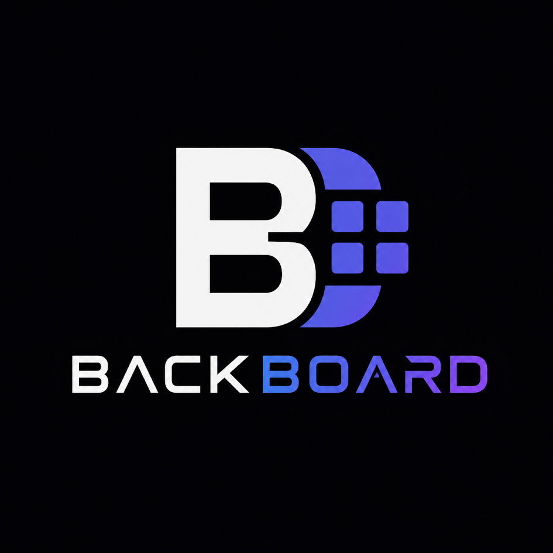

Inclusão
Permite que mais pessoas consigam compreender e utilizar conteúdos digitais.

Informação mais clara, organizada e compreensível para tornar a experiência digital melhor para todos.
Permite que mais pessoas consigam compreender e utilizar conteúdos digitais.
Informações organizadas reduzem a dificuldade de processamento.
Menos distrações ajudam o usuário a manter a atenção.
O usuário pode personalizar a interface conforme suas necessidades.
Alguns dados ajudam a entender por que a acessibilidade cognitiva importa — tanto para quem usa a web quanto para quem a constrói.
de pessoas no Brasil têm algum tipo de deficiência, 7,3% da população de 2 anos ou mais.
Censo Demográfico 2022, IBGEé a taxa de analfabetismo entre pessoas com deficiência no Brasil, contra 4,1% entre pessoas sem deficiência.
PNAD Contínua / IBGE-MDHC, 2024das páginas mais acessadas da web têm ao menos uma falha de acessibilidade detectável, com média de 51 erros por página.
WebAIM Million, 2025das páginas analisadas oferecem um link de "pular para o conteúdo" — um recurso simples de navegação por teclado.
WebAIM Million, 2025A acessibilidade cognitiva busca tornar sites e aplicativos mais fáceis de entender, navegar e utilizar.
Para isso, podemos utilizar textos claros, organização visual, menos distrações, espaçamento adequado e ferramentas que permitam personalizar a leitura.
Uma interface acessível não precisa ser complicada. Ela precisa ser clara, previsível e flexível.
Aumente ou diminua o tamanho do texto conforme sua preferência.
Amplie o espaço entre linhas e caracteres para facilitar a leitura.
Uma faixa acompanha o cursor e ajuda a manter o foco.
Aumenta a diferença entre o texto e o fundo.
Use frases curtas e objetivas.
Evite excesso de elementos na tela.
Divida conteúdos grandes em blocos.
Dê ao usuário controle sobre a interface.
Este projeto demonstra como recursos simples podem reduzir a carga mental e melhorar a experiência de navegação.